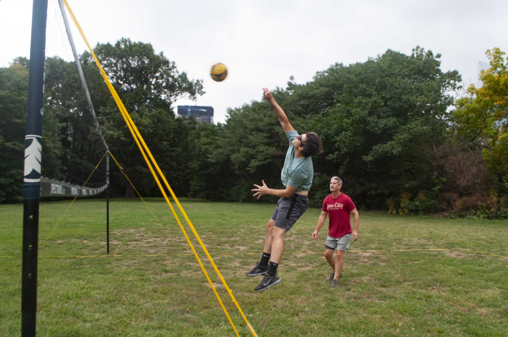
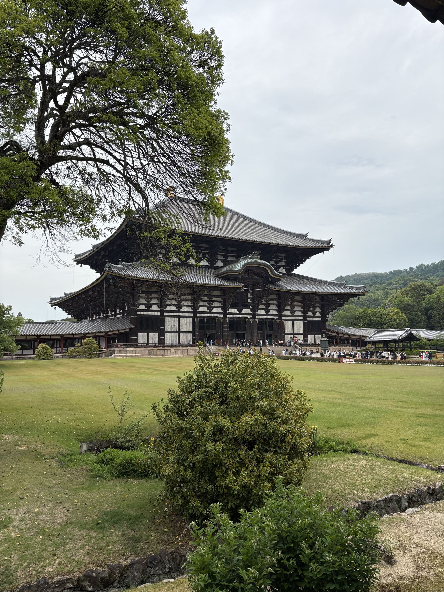
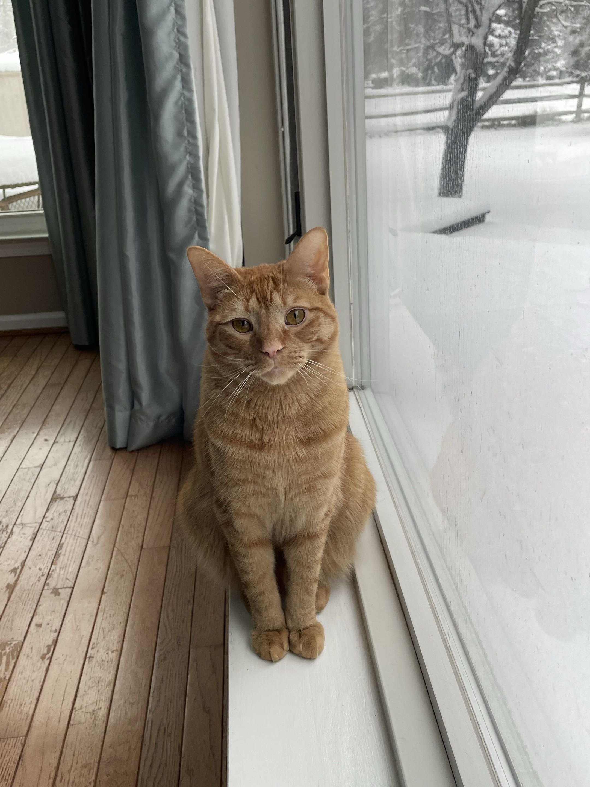
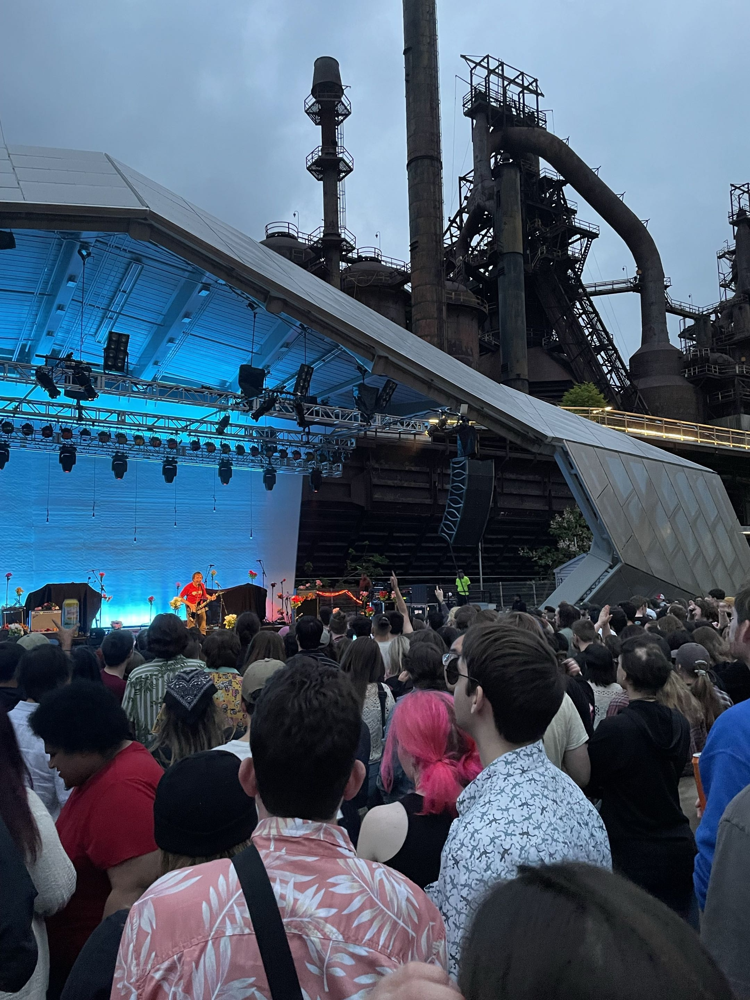

Drag
Drag
 Open Window (on 3D models)
Open Window (on 3D models)

/

+
Pan Camera
 Zoom
Zoom
Task Mover Bot is a Discord bot I created as a To-Do list tracker for my games. My team and I mainly communicate on Discord, so we also ended up doing our task tracking in there as well. We'd have separate channels for tasks that need to be completed and a channel for all of the previously completed tasks. However, to move each task to the completed channel, it is slightly tedious because you have to manually copy, paste, and delete it. So I created a simple bot to do all of that automatically. I even host it on a Raspberry Pi so I don't have to pay to host it on the cloud. It's written in JavaScript and uses the Discord API. The github repo for it is here.
In my previous work experience at Virtuality 360 I worked on a variety of coding projects. Mainly I worked on a 3D geospatial data visualization application utilizing Unity and C#. Think Google Earth, but specifically tuned for visualizing millions of data points and with tools specific for clients. As one of the first people on the project I was responsible for a lot of the prototyping and original code architecture. Aside from this project, I also created an internal web app in Pyton and Flask that allowed my colleagues to view data and mark it for quality assurance. Finally I worked on a VR application in Unity that allowed us to view custom 3D models.

This portfolio website was created by me in JavaScript using Three.js, HTML, and CSS. I've only built 3D applications in game engines before, so I wanted to try another tool for this project that integrates more smoothly with the web. The control icons in the bottom left were also made by me in Asesprite.

I'm an avid volleyball player. Normally I play beach volleyball, but I occasionally play grass, and in the winter I settle for indoor. This photo is from a tournament I played outside the art museum in Philly with my Dad.

I enjoy traveling when I can. Recently I visited Japan with some friends. Here's a picture I snapped of Daibutsuden (The Great Buddha Hall) in Nara. Inside is the largest bronze statue of The Buddha.

Another notable trip I've been on is to the Dominican Republic. This photo is from a lake part of Los Tres Ojos (The Three Eyes) in Santo Domingo. You can't swim in any of the lakes anymore, but you do get to take a boat powered by pulling on a cable to see all of them.

This is my parents' cat, Beaker. He's very independent and usually doesn't like being pet. My roommate actually has 3 cats though, so every time I visit home I think he smells them and attacks me.

I'm also a music lover and used to play various stringed instruments including the bass and guitar. These days I mainly just attend concerts around the city. This concert is actually at a venue a bit farther away called SteelStacks. I saw The Front Bottoms play here, and I thought the old Bethlehem Steel factories in the background were really cool.